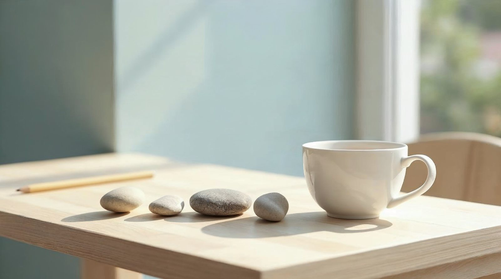
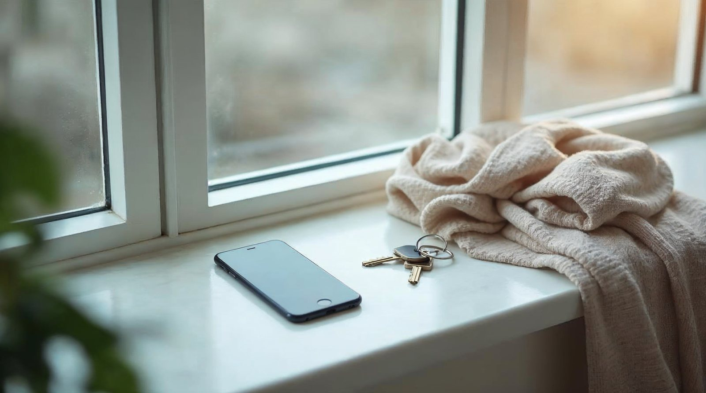

이종호 한의사 감수좋은꿈참사랑한의원 대표원장 (한의사 면허번호 19769)발행 2026-11-23 · 수정 2026-11-26
이 글의 차례
- 왜 세 줄로 정리하면 좋을까요
- 자주 하는 오해
- 예를 들면 이런 경우입니다
- 왜 '언제부터'가 그렇게 중요할까요
- 세 줄이 길어질 때는 어떻게 줄일까요?
- 먼저 이렇게 여쭙니다
- 방문 전에 먼저 해 볼 수 있는 것
- 스스로 점검해 보세요
- 한의원에서 함께 살필 수 있는 경우
- 언제 준비하고, 언제는 바로 병원으로 가야 하나요
- 이렇게 기록해 오시면 상담이 쉬워집니다
- 세 줄 메모, 이렇게 고쳐 써 보세요
- 셋째 줄 '바라는 점'은 어떻게 적으면 좋을까요?
- 증상에 따라 둘째 줄에 이런 말을 넣어 보세요
- 불편한 곳이 여러 군데라면 순서는 어떻게 정할까요?
- 메모에 넣지 않아도 되는 것
- 세 줄 메모를 가족과 함께 쓴다면
- 질문 칸도 따로 만들어 보세요
- 진료실에서 메모는 언제 꺼내면 될까요?
- 쓰기가 어려운 분께 드리는 요령
- 다시 올 때 세 줄은 어떻게 바꾸나요?
- 이런 증상은 먼저 확인이 필요합니다
- 함께 읽으면 좋은 글
막상 진료실에 앉으면 할 말이 잘 떠오르지 않는 일이 흔합니다. 미리 세 줄만 정리해 두면 이야기가 또렷해지고, 짧은 시간 안에도 꼭 필요한 내용이 빠지지 않습니다. 첫째 줄은 지금 가장 불편한 점, 둘째 줄은 언제부터 어떤 때에 달라지는지, 셋째 줄은 이번 진료에서 바라는 점입니다.
왜 세 줄로 정리하면 좋을까요
- 긴장하면 가장 불편한 것보다 방금 떠오른 것부터 말하게 되는 경우가 많습니다.
- 불편이 여러 가지면 순서 없이 이어져 핵심이 흐려지기 쉽습니다.
- 바라는 점을 말하지 않으면 서로 다른 목표를 생각한 채 상담이 끝나기도 합니다.
- 짧게 적어 두면 오히려 진료실에서 대화를 넓혀 가기 쉽습니다.

자주 하는 오해
- 증상을 빠짐없이 길게 적어 가야 제대로 진료받는다고 여기기 쉽지만, 핵심 한두 줄이 있으면 나머지는 진료실에서 질문으로 이어 갈 수 있습니다.
- 잠이나 소화 이야기는 아픈 곳과 상관없다고 빼기 쉽지만, 한의원에서는 몸 전체 리듬을 함께 보기 때문에 한 단어라도 적어 두시면 도움이 됩니다.
- 바라는 점을 말하면 무리한 요구처럼 들릴까 걱정하는 분이 많지만, "잠이라도 좀 이어서 자고 싶다"처럼 바라는 점이 분명해야 진료 방향을 맞추기 쉽습니다.
- 메모를 보며 말하면 실례라고 여기기 쉽지만, 휴대폰 화면이나 종이를 그대로 보여 주셔도 됩니다.
예를 들면 이런 경우입니다
- 허리 통증과 두통, 잠 설침이 함께 있는 직장인이라면 "아침에 허리가 굳어 세수하기 힘들다 / 한 달 전 야근이 늘면서부터, 오후에는 두통도 있다 / 출근 준비가 조금 수월했으면" 처럼 적을 수 있습니다.
- 시험이 다가오면 배가 아픈 수험생이라면 "시험 전날 배가 아프고 화장실을 자주 간다 / 고3이 되면서부터, 아침을 거르면 더하다 / 시험 날 속이 편했으면"처럼 정리할 수 있습니다.
- 글씨를 길게 쓰기 어려운 어르신이라면 "계단 내려갈 때 오른쪽 무릎 / 가을부터 / 시장까지 걸어가고 싶다" 정도로 짧게 적거나, 가족이 대신 적어 드려도 충분합니다.
왜 '언제부터'가 그렇게 중요할까요
둘째 줄에 적는 '언제부터'는 진료의 방향을 정하는 데 큰 몫을 합니다. 며칠 전 갑자기 시작된 불편과 몇 달째 이어지는 불편은 여쭐 질문부터 달라지기 때문입니다.
시작된 무렵에 있었던 일도 함께 떠올려 보세요. 이사, 이직, 시험, 출산, 날씨 변화처럼 생활이 바뀐 시기와 겹친다면 그 자체로 단서가 됩니다. 정확한 날짜가 아니어도 "추석 무렵부터"처럼 적으시면 충분합니다.
세 줄이 길어질 때는 어떻게 줄일까요?
하고 싶은 말이 많으면 한 줄이 문단이 되기 쉽습니다. 그럴 때는 형용사를 빼고 장면만 남겨 보세요.
- 길게 쓴 예: "요즘 몸이 전체적으로 안 좋고 여기저기 쑤시고 피곤해서 일도 손에 안 잡힌다"
- 줄인 예: "오후 3시면 어깨가 굳고 눈이 무겁다"
줄이고 나면 무엇이 가장 불편한지 스스로도 또렷해집니다. 지운 내용은 버리지 말고 메모 아래에 따로 적어 두시면, 진료실에서 필요할 때 꺼내 말씀하시면 됩니다.
먼저 이렇게 여쭙니다
- 지금 가장 불편한 점 한 가지는 무엇인가요?
- 언제부터, 어떤 때에 달라지나요?
- 일상에서 가장 불편한 순간은 언제인가요?
- 잠, 소화, 대소변, 손발의 온기는 요즘 어떤가요?
- 이번 진료에서 바라는 점은 무엇인가요?

방문 전에 먼저 해 볼 수 있는 것
- 첫째 줄: 지금 가장 불편한 점 한 가지
- 둘째 줄: 언제부터, 어떤 때에 달라지는지
- 셋째 줄: 진료에서 바라는 것 한 가지
- 세 줄 아래에 잠·소화·배변 가운데 달라진 것이 있으면 한 단어씩 덧붙이기
- 종이 대신 휴대폰 메모에 적어 진료실에서 보여 주기
스스로 점검해 보세요
방문 전에 아래 항목을 한 번 확인해 보세요.
- 가장 불편한 점 한 가지를 한 문장으로 말할 수 있다
- 언제부터 시작됐는지 대략의 시기(며칠 전, 몇 주 전, 몇 달 전)를 알고 있다
- 증상이 심해지거나 덜해지는 때(시간대, 동작, 음식)를 하나쯤 떠올릴 수 있다
- 최근 잠, 소화, 대소변에 달라진 점이 있는지 생각해 봤다
- 이번 진료에서 바라는 점이 한 가지 있다
- 복용 중인 약과 영양제 이름을 적어 두었거나 사진을 찍어 두었다
모두 채우지 못해도 괜찮습니다. 비어 있는 칸은 진료실에서 함께 채워 갑니다.
한의원에서 함께 살필 수 있는 경우
- 불편한 곳이 여러 군데라 어디서부터 말할지 모를 때 우선순위를 함께 정합니다.
- 증상이 오래되어 시작 시점이 흐릿할 때 생활 변화와 함께 짚어 봅니다.
- 하고 싶은 말이 많아 길어질 때 핵심을 나눠 가며 묻습니다.
좋은꿈참사랑한의원의 첫 방문은 접수 뒤 진맥과 문진, 필요하면 장비 확인, 생활 기록 함께 보기, 치료 방향 설명 순서로 진행됩니다. 진맥은 모든 분께 짚고, 맥을 짚는 동안에도 세 줄 메모의 내용을 여쭙고 들으며 우선순위를 정합니다.
필요하다고 판단되면 초음파나 인바디 770 같은 장비로 확인하고, 잠·소화·배변 기록을 가져오셨다면 함께 봅니다. 마지막으로 오늘 할 치료와 그 이유, 집에서 지킬 일, 다음에 확인할 일을 짧게 정리해 드립니다.
치료 중 온도나 자세가 불편하면 언제든 말씀해 주세요. 머무시는 동안만큼은 편하게 쉬다 가실 수 있도록 맞춰 드립니다.
언제 준비하고, 언제는 바로 병원으로 가야 하나요
- 세 줄 메모는 방문 하루 이틀 전에 적고, 진료 당일 아침에 한 번 다시 읽어 보세요.
- 증상이 날마다 들쭉날쭉하다면 방문 전 3~7일 동안 하루 한 줄씩 적어 오시면 흐름을 보기 쉽습니다.
- 바로 병원으로 가야 하는 신호는 아래 '이런 증상은 먼저 확인이 필요합니다'에 모아 두었습니다.
이렇게 기록해 오시면 상담이 쉬워집니다
- 세 줄 메모(가장 불편한 점, 시작과 변화, 바라는 점)
- 잠·소화·배변에서 달라진 점 한 줄
- 복용 중인 약과 영양제
- 다른 의료기관 검사 결과지가 있다면 함께
세 줄 메모, 이렇게 고쳐 써 보세요
처음 적은 메모를 조금만 다듬어도 전달되는 내용이 크게 달라집니다. 두 가지 예를 들어 보겠습니다.
- 고치기 전: "어깨가 아프다 / 좀 됐다 / 안 아팠으면"
- 고친 뒤: "오른팔을 올릴 때 어깨 앞쪽이 걸린다 / 두 달 전 이사 짐을 옮긴 뒤부터, 밤에 그쪽으로 누우면 더하다 / 선반 위 그릇을 꺼낼 수 있었으면"
- 고치기 전: "잠을 못 잔다 / 오래됐다 / 잘 자고 싶다"
- 고친 뒤: "누워서 잠들기까지 한 시간쯤 걸린다 / 여름부터, 업무가 많은 날 더하다 / 새벽에 깨지 않고 아침까지 잤으면"
고친 메모에는 동작, 시기, 계기, 바라는 장면이 들어 있습니다. 이 네 가지가 보이면 진료실에서 여쭐 질문이 훨씬 구체적이 됩니다.
셋째 줄 '바라는 점'은 어떻게 적으면 좋을까요?
"안 아팠으면", "건강해졌으면"처럼 넓게 적기보다 일상의 한 장면으로 적어 보세요. "아이를 안아 줄 때 허리가 덜 걸렸으면", "점심 먹고 오후 회의 때 덜 졸렸으면"처럼 말이지요.
장면으로 적은 바람은 진료 방향을 맞추는 기준이 됩니다. 다음에 오셨을 때도 그 장면이 어떻게 달라졌는지를 함께 이야기할 수 있어 대화가 또렷해집니다.
증상에 따라 둘째 줄에 이런 말을 넣어 보세요
- 통증이라면: 어떤 동작에서 아픈지, 아침과 저녁 중 언제 더한지
- 잠이라면: 잠드는 데 걸리는 시간, 밤에 깨는 횟수, 아침에 개운한지
- 소화라면: 식사 뒤 몇 분쯤 불편해지는지, 어떤 음식 뒤에 더한지
- 두통이라면: 아픈 자리(앞머리, 옆머리, 뒷목), 일주일에 몇 번인지
- 피로라면: 하루 중 가장 처지는 시각, 주말에 쉬면 덜한지
이 가운데 한두 개만 넣어도 둘째 줄이 훨씬 구체적이 됩니다. 모두 채우려고 애쓰지 않으셔도 괜찮습니다.
불편한 곳이 여러 군데라면 순서는 어떻게 정할까요?
불편한 곳이 셋, 넷이면 무엇을 첫째 줄에 쓸지 고민되실 겁니다. 그럴 때는 "일상에서 가장 자주 발목을 잡는 것"을 먼저 고르세요.
예를 들어 허리와 손목이 모두 불편해도 출근길마다 허리 때문에 힘들다면 허리가 첫째 줄입니다. 나머지는 메모 아래에 '그 밖에'라고 적고 나열해 두시면 진료실에서 차례로 여쭙습니다.
메모에 넣지 않아도 되는 것
- 인터넷에서 찾아본 병명이나 짐작은 굳이 적지 않으셔도 됩니다. 걱정되는 병명이 있다면 질문 칸에 한 줄로 남겨 주세요.
- 오래전에 있었던 일을 처음부터 시간순으로 모두 적을 필요는 없습니다.
- 다른 사람의 경험담은 빼고, 내 몸에서 느낀 것만 적어 주세요.
세 줄 메모를 가족과 함께 쓴다면
부모님이나 아이의 메모를 함께 쓸 때는 본인의 말을 첫째 줄에 그대로 담아 주세요. 가족이 보기에 더 중요해 보이는 것이 있더라도, 본인이 가장 불편하다고 말한 것을 먼저 적는 것이 좋습니다.
가족이 본 모습은 메모 아래쪽에 '가족이 본 것'이라고 따로 적어 오시면 됩니다. 본인의 느낌과 가족의 관찰을 나란히 놓고 보면, 진료실에서 여쭐 질문도 더 정확해집니다.
글로 적기 어려운 어르신이나 아이라면 가족이 "어디가 제일 불편해요?", "언제부터 그랬어요?", "뭐가 달라지면 좋겠어요?" 세 가지를 하나씩 여쭙고 대답을 받아 적어 주셔도 됩니다.
질문 칸도 따로 만들어 보세요
세 줄과 별도로 메모 맨 아래에 '물어볼 것'을 한두 줄 적어 두세요. "치료는 얼마나 자주 받아야 하나요?", "집에서 해도 되는 운동이 있나요?"처럼 평소 궁금했던 것이면 됩니다.
진료가 끝날 무렵 그 칸을 한 번 보고 빠진 질문이 없는지 확인하세요. 진료실을 나선 뒤에 "아, 그걸 물어볼걸" 하는 일이 줄어듭니다.
메모를 가족과 함께 쓰셨다면 가족이 궁금해한 질문도 같은 칸에 적어 오셔도 됩니다.
진료실에서 메모는 언제 꺼내면 될까요?
맥을 짚으며 어디가 불편하신지 여쭐 때 메모를 보여 주시면 됩니다. 읽어 주셔도 좋고 화면을 그대로 내밀어 주셔도 좋습니다.
쓰기가 어려운 분께 드리는 요령
글로 정리하는 것이 부담스럽다면 휴대폰 음성 메모에 세 줄을 말로 녹음해 두셨다가, 진료 전에 한 번 들어 보셔도 됩니다. 말로 하면 오히려 자연스럽게 정리되는 분도 많습니다.
다시 올 때 세 줄은 어떻게 바꾸나요?
재진 때는 처음부터 새로 쓰지 않으셔도 됩니다. 지난번 첫째 줄을 그대로 두고, 그 옆에 "조금 덜함", "비슷함", "더함" 가운데 하나를 적어 오세요.
그사이 새로 생긴 불편이 있다면 둘째 줄 아래에 한 줄을 더하고, 바라는 점이 바뀌었다면 셋째 줄도 고쳐 적어 주세요. 진료를 마친 날 "집에서 지킬 일"을 넷째 줄로 덧붙여 두면 몇 번의 진료가 한 장의 메모에 차곡차곡 쌓입니다.
처음 오신 분께 요즘 잠은 어떠냐고 묻는 것과, 지난번에 자다가 깨신다고 하셨는데 요즘은 어떠냐고 묻는 것은 다릅니다. 저는 재진의 가치가 거기에 있다고 생각합니다. 지난번 메모가 있으면 그 두 번째 질문을 더 정확하게 드릴 수 있습니다.
진료실에서 할 말을 미리 적어 보려는 마음은 내 몸을 제대로 설명하고 싶다는 마음입니다. 한 줄만 적어 오셔도 충분합니다. 다음에 오시면 그 첫째 줄이 그사이 어떻게 달라졌는지부터 여쭙겠습니다.
이런 증상은 먼저 확인이 필요합니다
- 가슴, 머리, 배에 갑자기 생긴 심한 통증이나 숨이 찬 느낌
- 의식이 흐려지거나, 말이 어눌해지거나, 한쪽 팔다리에 힘이 빠질 때
이런 신호가 있으면 한의원보다 가까운 병원이나 응급실을 먼저 찾으세요.
함께 읽으면 좋은 글

여쭙는 것
- 지금 가장 불편한 점 한 가지는 무엇인가요?
- 언제부터, 어떤 때에 달라지나요?
- 일상에서 가장 불편한 순간은 언제인가요?
한의원에서 함께 살필 것
- 불편한 곳이 여러 군데라 어디서부터 말할지 모를 때 우선순위를 함께 정합니다.
- 증상이 오래되어 시작 시점이 흐릿할 때 생활 변화와 함께 짚어 봅니다.
- 하고 싶은 말이 많아 길어질 때 핵심을 나눠 가며 묻습니다.
먼저 확인이 필요한 신호
- 가슴, 머리, 배에 갑자기 생긴 심한 통증이나 숨이 찬 느낌
- 의식이 흐려지거나, 말이 어눌해지거나, 한쪽 팔다리에 힘이 빠질 때
한눈에 보는 표
| 구분 | 핵심 |
|---|---|
| 여쭙는 것 | 지금 가장 불편한 점 한 가지는 무엇인가요? 언제부터, 어떤 때에 달라지나요? |
| 한의원에서 함께 살필 것 | 불편한 곳이 여러 군데라 어디서부터 말할지 모를 때 우선순위를 함께 정합니다. 증상이 오래되어 시작 시점이 흐릿할 때 생활 변화와 함께 짚어 봅니다. |
| 먼저 확인이 필요한 신호 | 가슴, 머리, 배에 갑자기 생긴 심한 통증이나 숨이 찬 느낌 의식이 흐려지거나, 말이 어눌해지거나, 한쪽 팔다리에 힘이 빠질 때 |
자주 묻는 질문
세 줄을 꼭 채워야 하나요?
아닙니다. 한 줄만 적어도 충분하고, 나머지는 진료실에서 함께 채웁니다.
불편한 곳이 많으면 어떻게 정리하나요?
가장 불편한 것부터 번호를 매겨 두면 순서를 정하기 쉽습니다.
메모를 보여 줘도 되나요?
네, 휴대폰 화면이나 종이를 보여 주셔도 됩니다.
아픈 곳만 적었는데 잠이나 소화도 물어보나요?
네. 몸 전체 리듬을 함께 살피기 때문에 진료실에서 이어서 여쭙습니다. 진맥도 모든 분께 짚습니다.
좋은꿈참사랑한의원은 재진 때 지난번 이야기부터 이어서 여쭙니다. 진료시간과 예약은 오시는 길에서 확인하세요.
어디서 상담받을 수 있나요?
좋은꿈참사랑한의원은 서울 동작구 만양로2길 2 신성빌딩 3층·5층(서울 동작구 상도동, 7호선 상도역 3번 출구 근처)에 있습니다. 한의사 3명(이종호 대표원장, 조영기 수석진료원장, 정원영 진료원장)이 진료합니다. 진료시간은 평일 09:30~20:00(점심 13:00~14:00), 토·일·공휴일 09:30~15:00이며, 방문 전 전화로 확인을 권합니다. 예약은 네이버 예약, 카카오톡 상담, 전화 02-815-7510로 받습니다.
이 글은 일반적인 건강 정보이며 개인의 진단이나 치료를 대신하지 않습니다. 증상이 있거나 복용 중인 약이 있다면 진료를 통해 확인하세요. 치료 효과는 개인마다 다를 수 있습니다.
작성 기준: 일반적으로 알려져 있는 건강 정보를 참고해 정리했습니다(대표원장 감수). 증상 기록은 1~2주 동안 하루 1회, 비슷한 시간에 적어 오시면 지난 상태와 비교하기 쉽습니다.